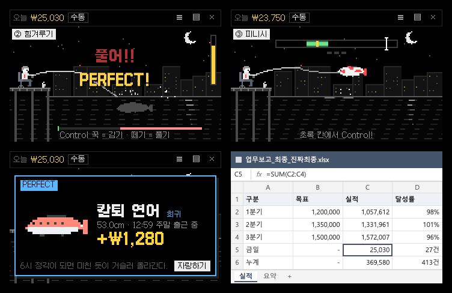

윈도우에서 "Windows의 PC 보호" 창이 뜨면 추가 정보 → 실행을 눌러 주세요.
맥은 받은 dmg 를 열어 앱을 응용 프로그램 폴더로 끌어 넣으면 끝. 낚시터는 메뉴 막대의 찌 아이콘에서 다시 꺼낼 수 있어요.
이런 게임이에요
- 늘 맨 위에 떠 있는 투명 낚시터 — 뒤 화면이 비치고 낚시꾼·찌·물고기만. 원래의 밤 연못 풍경으로도 바꾸기
- 다른 창을 쓰는 중에도 키 하나로 — 키 입력을 가로채지 않아 일에는 영향 없음 · 키는 아무 키로나 바꾸기
- 손맛 3단계 — ① 입질 챔질 ② 장력 보며 힘겨루기 ③ 타이밍 맞춰 피니시
- 자동 낚시 — 알아서 낚지만 성공률이 낮아요. 전설은 손맛으로만!
- 위장 키 — 누르면 낚시터가 평범한 노란 스티커 메모로 변신 (진짜로 글도 써져요)
- 스티커 메모 — 단축키 한 번에 새 메모, 화면에 여러 장 붙여 두기. 지운 메모는 앱 안 휴지통에서 되살리기
- 물고기 도감 50종 — 회식 메기 · 칼퇴 연어 · 월요병 광어 · 연차 고등어 · 멘탈 개복치 · 영업왕 아귀 · 퇴사 잉어 · 만년 과장 실러캔스…
- 오늘 수익 · 누적 수익 · 날짜별 수익 — 크기·희귀도대로 판매. 누적 수익으로 인턴부터 전설의 월급루팡까지 승진
- 자랑하기 — "14:32 식곤증 타임에 칼퇴 연어를 낚았다!" 카드 · 오늘의 루팡 리포트 → 바로 공유 · 이미지 저장